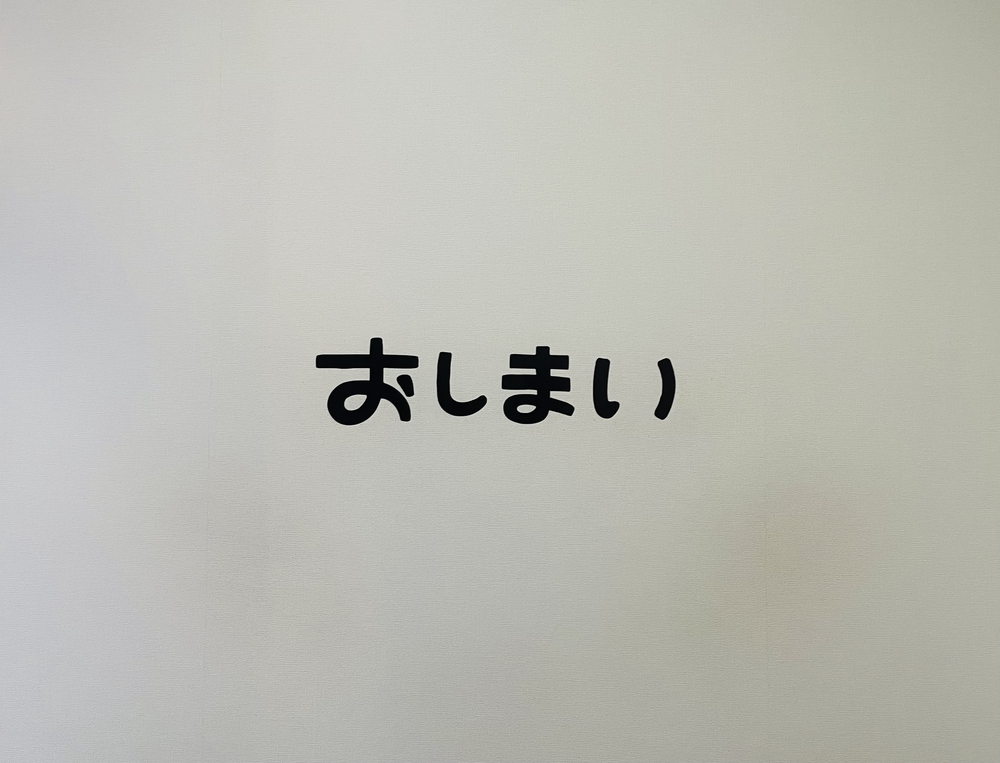

2025/03/07
10. これからも

この留学を通じて、日本では決してできない、とても貴重な経験をすることができました。 みなさんと一緒に勉強したり、遊びに行ったり、たくさんお話ししたりした時間は、どれも楽しく、かけがえのない思い出です。 みんなのおかげで、変化を前向きに受け入れ、楽しむことができました。 この経験を通して、私は少しずつ内向的な自分から、外交的になれたと感じています。 私の留学は今日で終わりますが、ここで生まれたつながりがこれからも続いていきますように。 これからも、もしよかったら仲良くしてください！皆さん、本当にありがとうございました!!